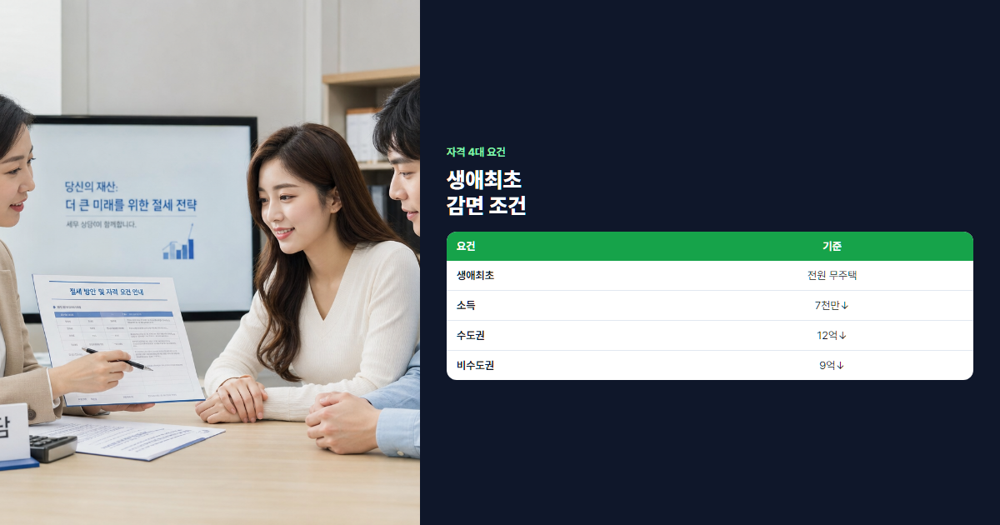

2026 생애최초 취득세 감면 완벽 정리 (200만원 혜택·자격·신청법)
첫 집 살 때 놓치면 안 되는 취득세 200만원 감면 총정리
"첫 집 사는데 세금 200만원 아낀다고?" 맞습니다. 생애최초 취득세 감면은 평생 처음 주택을 구입하는 무주택 가구에 취득세를 최대 200만원까지 100% 감면해 주는 제도입니다. 조건만 맞으면 신청만 하면 되는데, 자격 오해·서류 누락·신청 시기 놓침으로 혜택을 못 받는 경우가 많습니다. 2026년 기준 자격·소득·신청법을 실전 예시와 함께 정리했습니다.
- 4대 요건(생애최초·무주택·소득·취득가액)과 5억 아파트 감면 계산 예시를 담았습니다.
- 신혼부부·다자녀 감면과 비교표, 위택스 신청 절차까지 안내합니다.
- 감면 후 5년 매도 시 추징 등 주의사항과 FAQ를 정리했습니다.
본론 1. 생애최초 취득세 감면 제도 이해
제도 정의
생애최초 취득세 감면은 지방세특례제한법에 근거한 지방세 감면 제도입니다. 평생 처음 주택을 구입하는 세대가 일정 요건을 충족하면, 산출된 취득세에서 최대 200만원을 100% 감면받을 수 있습니다. 감면 한도 이내의 취득세는 전액 면제되고, 초과분만 납부합니다. 농어촌특별세도 취득세에 비례해 감면되므로 실질 절감액은 200만원보다 클 수 있습니다.
2026년 감면 4대 요건
| 요건 | 내용 |
|---|---|
| ① 생애최초 주택 구입 | 세대주·세대원 전원이 과거 주택 소유 이력 없음 |
| ② 세대원 전원 무주택 | 취득일 현재 세대 전원이 주택 미보유 |
| ③ 소득 기준 | 부부합산 연 소득 7,000만원 이하 (2026년 기준) |
| ④ 취득가액 | 수도권 12억 이하 / 비수도권 9억 이하 |
감면 계산 예시: 5억 아파트
1주택자가 5억원 아파트를 매수하면 취득세율 1% → 취득세 500만원입니다. 농어촌특별세 10%를 더하면 총 550만원이 부과됩니다. 생애최초 감면 200만원을 적용하면 취득세 300만원 + 농특세 30만원 → 실납부 약 330만원으로 220만원 절감 효과가 납니다.
감면 전 550만원 → 감면 후 약 330만원 (200만원+α 절약)
취득세 자체가 200만원 이하인 경우(예: 2억원 이하 저가 주택)에는 산출세액 전액이 면제됩니다. 자세한 세율 계산은 취득세·등록세 계산 가이드를 함께 참고하세요.

본론 2. 자격 조건 상세 분석
"생애최초"란?
생애최초는 취득 당시 세대주와 세대원 전원이 과거에 주택을 소유한 적이 없어야 한다는 뜻입니다. 본인뿐 아니라 배우자, 동거하는 직계존비속(부모·자녀)의 주택 보유 이력도 함께 봅니다. 주민등록등본상 같은 세대에 등재된 사람이 기준이므로, 부모님과 동거 중이라면 부모의 주택 보유 여부가 감면 자격에 영향을 줄 수 있습니다.
예외: 상속·경매 낙찰
상속·경매로 주택을 취득한 뒤 3개월 이내에 처분(매도)하면 생애최초 주택 구입으로 인정받는 예외가 있습니다. 다만 처분 기한·신고 절차를 지키지 않으면 이미 주택을 소유한 것으로 보아 감면이 불가합니다. 경매 낙찰 후 빠르게 매도하는 경우라도 위택스·구청에 사전 확인을 권합니다.
소득 기준 계산
소득은 부부합산 연 소득 7,000만원 이하여야 합니다. 근로소득자는 전년도 근로소득원천징수영수증의 총급여(비과세 제외 전)를 기준으로 합니다. 사업·기타소득이 있으면 합산하며, 배우자 소득도 더합니다. 7,000만원을 조금 넘더라도 부분 감면은 없으므로, 초과 시 신혼부부 감면 등 다른 제도를 검토해야 합니다.
취득가액 기준
취득가액은 실거래가(계약금액)를 기준으로 합니다. 공시가격이 아닌 매매계약서상 가격이 적용되며, 수도권 12억·비수도권 9억을 초과하면 감면 대상에서 제외됩니다. 수도권은 서울·인천·경기 및 세종·용인·화성 등 광역시 일부가 포함되므로, 계약 전 해당 지역이 수도권인지 비수도권인지 확인하세요.
케이스별 자격 판정 5가지
| 케이스 | 판정 | 이유 |
|---|---|---|
| 30대 미혼, 본인만 무주택, 4억 매수 | 가능 | 1인 세대, 소득·가격 요건 충족 시 |
| 신혼부부, 양가 무주택, 6억 매수 | 가능 | 합산소득 7천만↓, 생애최초 충족 |
| 부모와 동거, 부모가 주택 보유 | 불가 | 세대원 중 주택 보유자 존재 |
| 배우자가 과거 주택 소유(현재 무주택) | 불가 | 생애최초 요건 미충족 |
| 합산소득 7,500만원, 5억 매수 | 불가 | 소득 기준 초과 (신혼 감면 검토) |
본론 3. 신혼부부·다자녀 감면과 비교
생애최초 외에도 신혼부부·다자녀 취득세 감면이 있습니다. 원칙적으로 하나의 감면만 선택 적용되므로, 유리한 제도를 골라 신청해야 합니다.
| 감면 | 핵심 조건 | 감면 한도 |
|---|---|---|
| 생애최초 | 전원 무주택·생애 첫 구입 | 최대 200만원 |
| 신혼부부 | 혼인 7년 이내, 소득·가격 요건 | 최대 200만원 (지자체별 상이) |
| 다자녀 | 미성년 자녀 3명 이상 | 최대 300만원 (지자체별 상이) |
신혼부부 감면은 결혼 7년 이내 부부에게 적용되며, 소득 기준이 생애최초와 다를 수 있습니다. 다자녀 감면은 자녀 3명 이상 가구에 유리하고, 한도가 300만원까지 올라가는 지역도 있습니다. 생애최초와 신혼 감면을 동시에 받을 수 없으므로, 취득세액과 감면 한도를 비교해 선택하세요.
💡 어떤 감면이 유리한가?
- 취득세 200만원 이하 → 생애최초로 전액 면제 가능
- 취득세 500만원 + 자녀 3명 → 다자녀 300만원 감면이 유리할 수 있음
- 소득 7천만 초과 + 혼인 5년 → 신혼부부 감면 검토
- 위택스 감면 시뮬레이션으로 세액 비교 후 신청하세요
본론 4. 실전 신청 절차
신청 시기
생애최초 감면은 취득세 신고 시 동시 신청합니다. 취득일(잔금일)부터 60일 이내에 위택스 또는 관할 구청에서 신고·납부해야 합니다. 감면만 따로 나중에 신청하는 방식이 아니므로, 잔금 직후 서류를 준비해 두는 것이 좋습니다.
필요 서류
- 주민등록등본 — 세대 전원 주소·세대 구성 확인
- 가족관계증명서 — 배우자·직계존비속 관계 확인
- 무주택 확인서 — 세대원 전원 무주택 증명
- 소득증빙 — 근로소득원천징수영수증, 사업소득 증빙 등
- 매매계약서 — 취득가액·취득일 확인
위택스 온라인 신청 절차
- 위택스(wetax.go.kr) 로그인 → 지방세 신고 메뉴
- 취득세 신고서 작성 — 주택·매매 선택, 취득가액·일자 입력
- 감면 신청란에서 "생애최초 주택 구입" 체크
- 소득·무주택·취득가액 요건 해당 여부 입력
- 필요 서류 스캔·업로드 후 신고서 제출
- 감면 반영된 세액 확인 후 납부(또는 분납 신청)
온라인이 어려우면 관할 시·군·구청 세무과 방문 신청도 가능합니다. 처리 기간은 즉시~7일 내외이며, 서류가 빠지면 보완 요청이 올 수 있습니다. 방문 신청 시에는 신분증·인감증명서(또는 본인서명사실확인서)를 추가로 지참하면 원활합니다. 감면 승인 후 납부 고지서가 발급되면 계좌이체·카드·가상계좌 등으로 납부할 수 있습니다.
주의사항·감면 취소
⚠️ 반드시 알아둘 3가지
- 5년 이내 매도: 감면 후 5년(또는 법정 기간) 이내 주택을 매도하면 감면세액이 추징됩니다.
- 임대 전환: 전입·거주 요건이 있는 경우 임대만 하면 감면 취소·추징 대상이 될 수 있습니다.
- 허위 신청: 무주택·소득을 허위로 신고하면 감면 취소와 함께 가산세가 부과됩니다.
감면 받은 뒤에도 해당 주택에 실거주하는 것이 일반적입니다. 투자 목적으로 바로 임대하거나 단기 매도를 계획한다면 감면 적용 여부를 다시 검토하세요. 일부 지자체는 전입신고·실거주 확인을 강화하고 있으므로, 잔금 후 빠르게 전입하는 것이 안전합니다.
감면 추징 계산 예시
5억 아파트에 200만원 감면을 받아 330만원만 납부했다가, 3년 뒤 매도하면 감면받은 200만원 + 이자가 추징될 수 있습니다. 5년 이상 거주 후 매도하면 추징 없이 처분할 수 있으니, 보유 기간을 미리 계획해 두세요.
실전 시뮬레이션 3케이스
케이스 A: 30대 직장인, 첫 집 5억
본인 1인 세대, 연소득 4,500만원, 수도권 5억 아파트 매수. 취득세 500만원 + 농특세 50만원 = 550만원 → 생애최초 200만원 감면 → 실납부 약 330만원. 자격 모두 충족, 위택스에서 감면 신청만 하면 됩니다.
케이스 B: 신혼부부, 6억 신축 (생애최초 vs 신혼)
혼인 2년, 합산소득 6,200만원, 6억 신축 아파트. 취득세 600만원(1%) + 농특세 60만원 = 660만원. 생애최초·신혼 감면 모두 200만원 한도 → 어느 쪽을 써도 실납부 약 460만원. 다만 신혼 감면은 소득 상한이 더 높은 지역이 있어, 소득이 7천만에 근접하면 신혼 쪽이 안전합니다.
케이스 C: 부부합산 7,500만원 (감면 불가)
생애최초·무주택·5억 매수 조건은 맞지만 합산소득 7,500만원으로 소득 기준 초과. 생애최초 감면 불가, 취득세 550만원 전액 납부. 혼인 7년 이내라면 신혼부부 감면 요건(지역별 소득 상한)을 별도로 확인해 보세요. 소득이 경계선이라면 연말정산·급여 조정 시점을 고려해 취득 시기를 조율하는 방법도 있습니다.
자주 묻는 질문 (FAQ)
Q1. 부모님과 동거 시 세대분리 필요한가요?
부모가 주택을 보유 중이면 같은 세대에 있을 경우 감면이 불가합니다. 세대분리(전입신고)로 별도 세대가 되어도, 부모 보유 주택이 세대원 기준에 해당하면 여전히 불가할 수 있습니다. 무주택 확인서 발급 전 세대 구성을 반드시 점검하세요.
Q2. 오피스텔·분양권도 생애최초 감면 되나요?
생애최초 감면은 주택 취득에 적용됩니다. 주거용 오피스텔이 주택으로 분류되면 가능할 수 있으나, 업무·숙박용 오피스텔은 제외됩니다. 분양권은 취득 시점·유형에 따라 별도 규정이 있으니 구청 상담을 권합니다. 주택 여부는 건축물대장 용도와 지자체 해석에 따라 달라지므로, 계약 전 확인이 필요합니다.
Q3. 감면 후 이사 가능한가요?
같은 주택 내에서 거주를 유지하면 통상 문제없습니다. 5년 이내 매도 시 추징이므로, 이사가 매도를 수반하면 감면 취소 위험이 있습니다. 다른 주택으로 갈아타는 경우도 세대·보유 요건에 따라 달라집니다.
Q4. 소득 초과 시 부분 감면 있나요?
없습니다. 7,000만원을 1원이라도 초과하면 생애최초 감면 전체가 적용되지 않습니다. 신혼부부·다자녀 등 다른 감면 요건을 검토하세요.
Q5. 청약 당첨 주택도 감면 적용되나요?
적용 가능합니다. 생애최초·무주택·소득·가격 요건을 충족하면 청약 당첨 주택의 잔금(취득) 시점에 감면 신청을 할 수 있습니다. 무주택 기간은 무주택 기간 인정 기준과도 연결되니 함께 확인하세요.
Q6. 감면 신청 놓쳤을 때 소급 환급되나요?
취득세 신고 시 감면을 신청하지 않고 전액 납부한 경우, 일정 기간 내 경정청구로 환급을 신청할 수 있는지 지자체에 문의해야 합니다. 기한이 지나면 소급이 어려운 경우가 많으므로 최초 신고 시 반드시 함께 신청하세요.
Q7. 배우자 명의로만 사도 되나요?
취득자가 누구든 세대 전원의 생애최초·무주택·소득 요건을 충족해야 합니다. 배우자 단독 명의라도 배우자 본인의 생애최초 여부와 세대원 보유 현황을 모두 확인합니다.
결론
① 생애최초 취득세 감면은 최대 200만원 절약 가능한 제도입니다. ② 무주택·소득 7천만·가격 한도 4가지를 모두 충족해야 합니다. ③ 잔금 후 60일 이내 위택스에서 취득세 신고와 동시에 감면을 신청하세요. 첫 집이라면 이 혜택을 놓치지 않도록 계약 전 자격부터 점검해 보시기 바랍니다.
본 글은 2026년 7월 기준 일반 정보이며, 생애최초 감면 요건·한도는 지자체·법령 변경에 따라 달라질 수 있습니다. 감면 신청 전 관할 구청·위택스에서 최종 확인하시기 바랍니다.